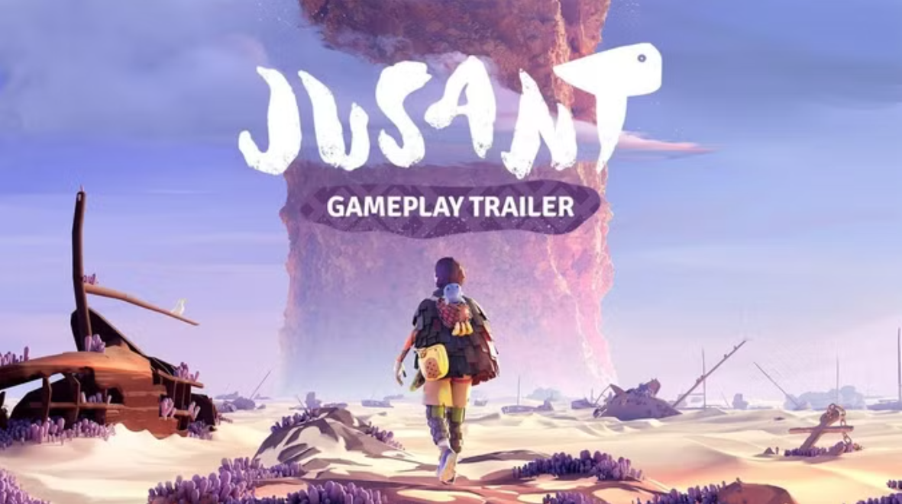
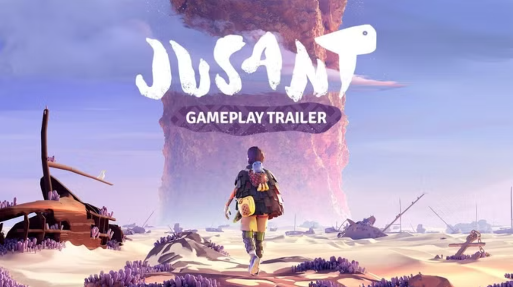

El gran juego indie olvidado de 2023
El estudio francés Don't Nod, los creadores de Life Is Strange, lanzaron al mercado hace ahora poco más de un año este apasionante título de escalada que recuerda en parte al estilo de Fumito Ueda.
El estudio francés Don't Nod, los creadores de Life Is Strange, lanzaron al mercado hace ahora poco más de un año este apasionante título de escalada que recuerda en parte al estilo de Fumito Ueda.
La nueva consola de Sony más potente ya está a la venta, y el juego de acción en mundo abierto se suma a la lista de títulos compatibles. Ya conocemos todas sus mejoras en la nueva consola.
La actualización v.06.00 también arregla algunos errores en todas las versiones y añade una nueva opción que te permite reducir las pistas mientras resuelves los puzles.